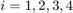
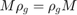
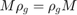

elements.
elements.This document will show some features of RepLAB.
Before trying any of the RepLAB commands, we must first add the paths:
replab_addpaths
num. of constraints = 3 dim. of sdp var = 2, num. of sdp blk = 1 dim. of free var = 1 *** convert ublk to linear blk ******************************************************************************************** SDPT3: homogeneous self-dual path-following algorithms ******************************************************************************************** version predcorr gam expon HKM 1 0.000 1 it pstep dstep pinfeas dinfeas gap mean(obj) cputime kap tau theta -------------------------------------------------------------------------------------------- 0|0.000|0.000|7.2e+00|7.2e+00|2.1e+02|-4.553413e-02| 0:0:00|2.1e+02|1.0e+00|1.0e+00| chol 1 1 1|0.673|0.673|6.1e+00|6.1e+00|2.0e+02|-7.367574e-02| 0:0:00|1.4e+02|9.3e-01|7.9e-01| chol 1 1 2|1.000|1.000|8.7e-01|8.8e-01|1.4e+01| 1.045118e+00| 0:0:00|3.2e+00|1.3e+00|1.6e-01| chol 1 1 3|1.000|1.000|1.0e-01|1.0e-01|1.3e+00| 5.276387e-01| 0:0:00|3.8e+00|1.6e+00|2.2e-02| chol 1 1 4|1.000|1.000|2.4e-02|2.6e-02|1.6e-01| 4.921949e-01| 0:0:00|9.1e-01|1.7e+00|5.9e-03| chol 1 1 5|1.000|1.000|4.3e-03|6.7e-03|1.4e-02| 5.000878e-01| 0:0:01|2.0e-01|1.8e+00|1.1e-03| chol 1 1 6|1.000|1.000|8.3e-04|2.2e-03|2.4e-03| 5.003111e-01| 0:0:01|4.4e-02|1.8e+00|2.1e-04| chol 1 1 7|1.000|1.000|1.8e-04|7.5e-04|3.6e-04| 5.002247e-01| 0:0:01|9.5e-03|1.8e+00|4.5e-05| chol 1 1 8|1.000|1.000|3.7e-05|2.8e-04|6.4e-05| 5.001012e-01| 0:0:01|2.0e-03|1.8e+00|9.4e-06| chol 1 1 9|1.000|1.000|7.8e-06|1.1e-04|1.3e-05| 5.000418e-01| 0:0:01|4.3e-04|1.8e+00|2.0e-06| chol 1 1 10|1.000|1.000|1.6e-06|4.3e-05|2.6e-06| 5.000170e-01| 0:0:01|9.0e-05|1.8e+00|4.2e-07| chol 1 1 11|1.000|1.000|3.4e-07|1.7e-05|5.3e-07| 5.000068e-01| 0:0:01|1.9e-05|1.8e+00|8.7e-08| chol 1 1 12|1.000|1.000|7.2e-08|3.5e-06|1.0e-07| 5.000014e-01| 0:0:01|4.0e-06|1.8e+00|1.8e-08| chol 1 1 13|1.000|1.000|1.5e-08|6.9e-07|2.0e-08| 5.000003e-01| 0:0:01|8.4e-07|1.8e+00|3.8e-09| chol 1 1 14|1.000|1.000|4.9e-09|7.1e-08|6.5e-08| 5.000000e-01| 0:0:01|1.7e-07|1.8e+00|1.3e-09| Stop: max(relative gap,infeasibilities) < 1.00e-07 ------------------------------------------------------------------- number of iterations = 14 primal objective value = 5.00000013e-01 dual objective value = 5.00000023e-01 gap := trace(XZ) = 6.45e-08 relative gap = 4.30e-08 actual relative gap = -4.88e-09 rel. primal infeas = 4.92e-09 rel. dual infeas = 7.12e-08 norm(X), norm(y), norm(Z) = 1.1e+00, 8.7e-01, 1.0e+00 norm(A), norm(b), norm(C) = 1.5e+01, 1.0e+00, 1.4e+00 Total CPU time (secs) = 0.68 CPU time per iteration = 0.05 termination code = 0 DIMACS: 4.9e-09 0.0e+00 7.1e-08 0.0e+00 -4.9e-09 3.2e-08 -------------------------------------------------------------------
RepLAB decomposes representations of permutation groups; this does not lose generality as all finite groups can be represented by permutation groups.
We construct the symmetric group acting on elements.
n = 4;
The symmetric group is generated by a cyclic permutation  :
:
g1 = [2:n 1];
and one transposition  :
:
g2 = [2 1 3:n];
Remark that permutations in RepLAB are simply row vectors of images. We use the convention that permutations act on indices  on the left, thus the image of 3 under is compatible with MATLAB syntax:
g2(3)
ans =
3
We construct the group by first accessing the group of permutations on 4 elements, then constructing a subgroup
S4 = replab.Permutations(4).subgroup({g1 g2})
S4 =
replab.PermutationSubgroup
domainSize: 4
identity: [1, 2, 3, 4]
parent: Permutations acting on 4 elements
generator(1): [2, 3, 4, 1]
generator(2): [2, 1, 3, 4]
noting that the generators of the group are named  ,
,  ,...
,...
We can perform a few operations on finite groups. Let  be a random permutation, which we can obtain in (mostly) equivalent ways by either
be a random permutation, which we can obtain in (mostly) equivalent ways by either
g = randperm(n); g = S4.sample; g = S4.sampleUniformly; % % We can also compute the group order or enumerate the elements of % the group S4.order
ans =
24
S4.elements
ans = Indexed family of 24 elements 1 = [1, 2, 3, 4] 2 = [1, 2, 4, 3] 3 = [1, 3, 4, 2] 4 = [1, 3, 2, 4] 5 = [1, 4, 2, 3] 6 = [1, 4, 3, 2] 7 = [2, 3, 4, 1] 8 = [2, 3, 1, 4] 9 = [2, 4, 1, 3] 10 = [2, 4, 3, 1] 11 = [2, 1, 3, 4] 12 = [2, 1, 4, 3] 13 = [3, 4, 1, 2] 14 = [3, 4, 2, 1] 15 = [3, 1, 2, 4] 16 = [3, 1, 4, 2] 17 = [3, 2, 4, 1] 18 = [3, 2, 1, 4] 19 = [4, 1, 2, 3] 20 = [4, 1, 3, 2] 21 = [4, 2, 3, 1] 22 = [4, 2, 1, 3] 23 = [4, 3, 1, 2] 24 = [4, 3, 2, 1]
a technique that works even for big groups.
S30 = replab.Permutations(30).subgroup({[2:30 1] [2 1 3:30]})
S30.order
S30 =
replab.PermutationSubgroup
domainSize: 30
identity: 1 x 30 double
parent: Permutations acting on 30 elements
generator(1): 1 x 30 double
generator(2): 1 x 30 double
ans =
265252859812191058636308480000000
S30.elements
ans =
Indexed family of 265252859812191058636308480000000 elements
1 = [1, 2, 3, 4, 5, 6, 7, 8, 9, 10, 11, 12, 13, 14, 15, 16, 17, 18, 19, 20, 21, 22...
2 = [1, 2, 3, 4, 5, 6, 7, 8, 9, 10, 11, 12, 13, 14, 15, 16, 17, 18, 19, 20, 21, 22...
3 = [1, 2, 3, 4, 5, 6, 7, 8, 9, 10, 11, 12, 13, 14, 15, 16, 17, 18, 19, 20, 21, 22...
4 = [1, 2, 3, 4, 5, 6, 7, 8, 9, 10, 11, 12, 13, 14, 15, 16, 17, 18, 19, 20, 21, 22...
5 = [1, 2, 3, 4, 5, 6, 7, 8, 9, 10, 11, 12, 13, 14, 15, 16, 17, 18, 19, 20, 21, 22...
6 = [1, 2, 3, 4, 5, 6, 7, 8, 9, 10, 11, 12, 13, 14, 15, 16, 17, 18, 19, 20, 21, 22...
7 = [1, 2, 3, 4, 5, 6, 7, 8, 9, 10, 11, 12, 13, 14, 15, 16, 17, 18, 19, 20, 21, 22...
8 = [1, 2, 3, 4, 5, 6, 7, 8, 9, 10, 11, 12, 13, 14, 15, 16, 17, 18, 19, 20, 21, 22...
9 = [1, 2, 3, 4, 5, 6, 7, 8, 9, 10, 11, 12, 13, 14, 15, 16, 17, 18, 19, 20, 21, 22...
10 = [1, 2, 3, 4, 5, 6, 7, 8, 9, 10, 11, 12, 13, 14, 15, 16, 17, 18, 19, 20, 21, 22...
11 = [1, 2, 3, 4, 5, 6, 7, 8, 9, 10, 11, 12, 13, 14, 15, 16, 17, 18, 19, 20, 21, 22...
12 = [1, 2, 3, 4, 5, 6, 7, 8, 9, 10, 11, 12, 13, 14, 15, 16, 17, 18, 19, 20, 21, 22...
.. 265252859812191058636308479999977 elements omitted
265252859812191058636308479999990 = [30, 29, 26, 11, 5, 21, 14, 10, 27, 22, 15, 12, 6, 19, 8, 2, 25, 9, 28, 17, 23...
265252859812191058636308479999991 = [30, 29, 26, 11, 5, 21, 14, 10, 27, 22, 15, 12, 6, 19, 8, 2, 25, 9, 28, 17, 23...
265252859812191058636308479999992 = [30, 29, 26, 11, 5, 21, 14, 10, 27, 22, 15, 12, 6, 19, 8, 2, 25, 9, 28, 17, 23...
265252859812191058636308479999993 = [30, 29, 26, 11, 5, 21, 14, 10, 27, 22, 15, 12, 6, 19, 8, 2, 25, 9, 28, 17, 23...
265252859812191058636308479999994 = [30, 29, 26, 11, 5, 21, 14, 10, 27, 22, 15, 12, 6, 19, 8, 2, 25, 9, 28, 17, 23...
265252859812191058636308479999995 = [30, 29, 26, 11, 5, 21, 14, 10, 27, 22, 15, 12, 6, 19, 8, 2, 25, 9, 28, 17, 23...
265252859812191058636308479999996 = [30, 29, 26, 11, 5, 21, 14, 10, 27, 22, 15, 12, 6, 19, 8, 2, 25, 9, 28, 17, 23...
265252859812191058636308479999997 = [30, 29, 26, 11, 5, 21, 14, 10, 27, 22, 15, 12, 6, 19, 8, 2, 25, 9, 28, 17, 23...
265252859812191058636308479999998 = [30, 29, 26, 11, 5, 21, 14, 10, 27, 22, 15, 12, 6, 19, 8, 2, 25, 9, 28, 17, 23...
265252859812191058636308479999999 = [30, 29, 26, 11, 5, 21, 14, 10, 27, 22, 15, 12, 6, 19, 8, 2, 25, 9, 28, 17, 23...
265252859812191058636308480000000 = [30, 29, 26, 11, 5, 21, 14, 10, 27, 22, 15, 12, 6, 19, 8, 2, 25, 9, 28, 17, 23...
The defining representation of  simply permutes the coordinates of
simply permutes the coordinates of  :
:
rho = S4.definingRep
rho =
Orthogonal real representation of dimension 4
dimension: 4
field: 'R'
group: replab.PermutationSubgroup
inverseImages: {[0, 1, 0, 0; 0, 0, 1, 0; 0, 0, 0, 1; 1, 0, 0, 0], [0, 1, 0, 0; 1, 0, 0, 0; 0, 0, 1, 0; 0, 0, 0, 1]}
isUnitary: true
images{1}: [0, 0, 0, 1; 1, 0, 0, 0; 0, 1, 0, 0; 0, 0, 1, 0]
images{2}: [0, 1, 0, 0; 1, 0, 0, 0; 0, 0, 1, 0; 0, 0, 0, 1]
We take two elements of :
g = [2 3 1 4] h = [2 1 4 3]
g =
2 3 1 4
h =
2 1 4 3
and their composition
gh = g(h)
gh =
3 2 4 1
and verify that we have a representation of the group
rho.image(g) * rho.image(h) rho.image(gh)
ans =
0 0 0 1
0 1 0 0
1 0 0 0
0 0 1 0
ans =
0 0 0 1
0 1 0 0
1 0 0 0
0 0 1 0
We can also define representations from their images. Here, we define the sign representation (using a permutation representation of it!).
dim = 2;
isUnitary = true;
rho1 = S4.repByImages('R', dim, isUnitary, {[0 1; 1 0] [0 1; 1 0]})
rho2 = S4.permutationRep(2, {[2 1] [2 1]})
rho1 =
Orthogonal real representation of dimension 2
dimension: 2
field: 'R'
group: replab.PermutationSubgroup
inverseImages: {[0, 1; 1, 0], [0, 1; 1, 0]}
isUnitary: true
images{1}: [0, 1; 1, 0]
images{2}: [0, 1; 1, 0]
rho2 =
Orthogonal real representation of dimension 2
dimension: 2
field: 'R'
group: replab.PermutationSubgroup
inverseImages: {[0, 1; 1, 0], [0, 1; 1, 0]}
isUnitary: true
images{1}: [0, 1; 1, 0]
images{2}: [0, 1; 1, 0]
rho1.image(g) rho2.image(g)
ans =
1 0
0 1
ans =
1 0
0 1
RepLAB provides the irreducible decomposition of representations over the real numbers, identifying the representation type (real, complex or quaternionic):
I = rho.decomposition
I =
Subrepresentation
dimension: 4
field: 'R'
group: replab.PermutationSubgroup
irrepInfo: []
isUnitary: true
niceBasis: replab.NiceBasis
parent: Orthogonal real representation of dimension 4
U(1,:): [1, 1, 1, 1]/2
U(2,:): [1, -1, 1, -1]/2
U(3,:): [1, -1, -1, 1]/2
U(4,:): [1, 1, -1, -1]/2
component(1): Isotypic component R(1)
component(2): Isotypic component R(3)
We can get isotypic components and the copies of irreducible representations contained inside
I.component(1) subrho1 = I.component(1).irrep(1)
ans =
Isotypic component R(1)
dimension: 1
field: 'R'
group: replab.PermutationSubgroup
irrepDimension: 1
irrepInfo: []
isUnitary: true
multiplicity: 1
niceBasis: replab.NiceBasis
parent: Orthogonal real representation of dimension 4
U(1,:): [1, 1, 1, 1]/2
irrep(1): Real irreducible subrepresentation of real type
subrho1 =
Real irreducible subrepresentation of real type
dimension: 1
field: 'R'
group: replab.PermutationSubgroup
irrepInfo: irreducible, '1', real of real type
isUnitary: true
niceBasis: replab.NiceBasis
parent: Orthogonal real representation of dimension 4
U(1,:): [1, 1, 1, 1]/2
I.component(2) subrho2 = I.component(2).irrep(1)
ans =
Isotypic component R(3)
dimension: 3
field: 'R'
group: replab.PermutationSubgroup
irrepDimension: 3
irrepInfo: []
isUnitary: true
multiplicity: 1
niceBasis: replab.NiceBasis
parent: Orthogonal real representation of dimension 4
U(1,:): [1, -1, 1, -1]/2
U(2,:): [1, -1, -1, 1]/2
U(3,:): [1, 1, -1, -1]/2
irrep(1): Real irreducible subrepresentation of real type
subrho2 =
Real irreducible subrepresentation of real type
dimension: 3
field: 'R'
group: replab.PermutationSubgroup
irrepInfo: irreducible, real of real type
isUnitary: true
niceBasis: replab.NiceBasis
parent: Orthogonal real representation of dimension 4
U(1,:): [1, -1, 1, -1]/2
U(2,:): [1, -1, -1, 1]/2
U(3,:): [1, 1, -1, -1]/2
with their bases:
subrho1.U subrho2.U
ans =
(1,1) 0.5000
(1,2) 0.5000
(1,3) 0.5000
(1,4) 0.5000
ans =
0.5000 -0.5000 0.5000 -0.5000
0.5000 -0.5000 -0.5000 0.5000
0.5000 0.5000 -0.5000 -0.5000
The commutant algebra of is composed of all the matrices  that commute with , that is  for all in the group.
that commute with , that is  for all in the group.
RepLAB gives an access to that algebra:
C = rho.commutant
C =
replab.CommutantFromEquivariant
field: 'R'
group: replab.PermutationSubgroup
n: 4
parent: 4 x 4 real matrices
rep: Orthogonal real representation of dimension 4
and we can sample generic matrices from that algebra
C.sample
ans = -0.9331 -0.2032 -0.2032 -0.2032 -0.2032 -0.9331 -0.2032 -0.2032 -0.2032 -0.2032 -0.9331 -0.2032 -0.2032 -0.2032 -0.2032 -0.9331
or perform an orthogonal projection of arbitrary matrices in that algebra
Mgen = rand(n, n)
Mgen =
0.2776 0.3896 0.8331 0.2740
0.9161 0.5226 0.4246 0.0199
0.8435 0.0885 0.2870 0.2562
0.0418 0.5346 0.4237 0.7578
M = C.project(rand(n,n))
M =
0.3915 0.5868 0.5868 0.5868
0.5868 0.3915 0.5868 0.5868
0.5868 0.5868 0.3915 0.5868
0.5868 0.5868 0.5868 0.3915
Which is has a block diagonalization in the symmetry adapted basis:
U = I.U
U = (1,1) 0.5000 (2,1) 0.5000 (3,1) 0.5000 (4,1) 0.5000 (1,2) 0.5000 (2,2) -0.5000 (3,2) -0.5000 (4,2) 0.5000 (1,3) 0.5000 (2,3) 0.5000 (3,3) -0.5000 (4,3) -0.5000 (1,4) 0.5000 (2,4) -0.5000 (3,4) 0.5000 (4,4) -0.5000
U*M*U'
ans =
2.1519 0 0 0
-0.0000 -0.1952 0.0000 0.0000
0.0000 0.0000 -0.1952 -0.0000
-0.0000 -0.0000 0.0000 -0.1952